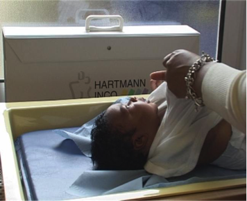

PARTNERSHIP PROJECTS WITH MIGRANT & REFUGEE COMMUNITIES
“I liked working in a group, being able to work on our own ideas, in our ownlanguage, for our own community”
This area of our work focused on building partnerships with local migrant and refugee organisations and creating wider opportunities for young people from minority communities. Young people or young people and adults working together created videos that portray the experience of growing up in London and sometimes the misunderstandings between generations and communities.
We also made a number of videos in Arabic for organisations that wanted to use video in different languages to reach members of communities, particularly women, who weren’t taking up local support services.
It's For Us To Decide

Well-being Child Birth
An information film for the local Mental Health Trust and Arabic-speaking Community Organisations.

Other partners were from organisations that worked with a range of local communities – Filipino, from the Horn of Africa – Baraka Youth, Horn Reflections, young people from the Eritrean Support Group, the Eritrean Parents and Children Association – Moroccan, Traveller and West Indian.
Partnership projects with migrant & refugee communities videos
SCREENINGS
To publicise community productions, and the issues they raise, we held screenings in local venues, such as youth clubs, schools, local cinemas, professional screening studios and community centres. Some videos were shown in public places such as outpatients’ departments, sports centres, housing association foyers and local authority conferences. Others were used by the health service for training or by teachers as part of their pupils’ social education. We also distributed videos to libraries, and submitted them to festivals and broadcast channels.
Partnership projects with migrant & refugee communities videos